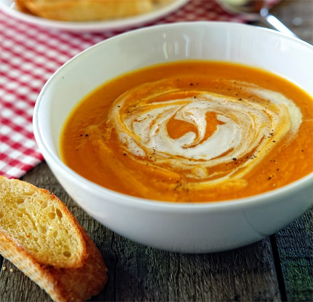
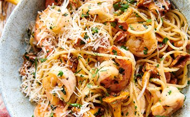

link
To jest strona kulinarna
Zupa z pieczonej dyni z nutą pomarańczy

Skladniki
- Rosół drobiowy (1 kostka)
- Miąższ dyni bez pestek (1 kc)
- Olej (2 łyżki)
- Śmietana 30% (100 ml)
- Sok pomarańczowy (0,3 szklanki)
- Cukier (do smaku)
- Sól (do smaku)
- Pieprz (do smaku)
Przygotowanie
- Piekarnik rozgrzej do 200°C.
- Dużą blachę wyłóż papierem do pieczenia.
- Rosół rozpuść w 1 szklance wrzącej wody.
- Dynię umyj, przekrój na części, obierz ze skórki, usuń nasiona i pokrój w kostkę, włóż do miski i skrop olejem.
Rozłóż na blasze i wstaw do piekarnika. Piecz do miękkości. Dynia powinna być miękka, ale nie przyrumieniona.
- Upieczoną dynię przełóż do garnka, wlej sok pomarańczowy, rosół i śmietankę.
- Zmiksuj. Dopraw do smaku solą, cukrem i pieprzem.
- Zupę podaj z grzankami.
Harira
Skladniki
- Cebula (2 sztuki)
- Kumin (1 łyżeczka)
- Cynamon laska (1 sztuka)
- Koncentrat pomidorowy (1 łyżka)
- Cieciorka (1 puszka)
- Kurkuma (1 łyżeczka)
- Sól (do smaku)
- Wędzona papryka (1 sztuka)
- Imbir 2cm
Przygotowanie
- Cebulę pokrój na cienkie piórka. W dużym garnku na oliwie zeszklij posiekane cebule.
- Dodaj wszystkie przyprawy i dopraw solą. Wymieszaj i podsmaż jeszcze 2 minuty.
- Dodaj koncentrat pomidorowy, wymieszaj. Dodaj pomidory z puszki, cieciorkę i soczewicę.
- Dolej tyle wody, aby przykryć wszystkie składniki, wymieszaj, doprowadź do wrzenia i gotuj na średnim ogniu ok 30 min.
- Na koniec dopraw do smaku solą i sokiem z limonki. Odstaw, aby smaki się przegryzły.
- Imbir obierz, pokrój na cienkie plastry, a następnie na cieniutkie zapałki. Oderwij listki z kolendry.
- Rozlej zupę do miseczek, posyp słupkami imbiru i świeżymi listkami kolendry. Serwuj z jogurtem i chlebkami pita.
Gulasz paprykowy ze szpeclemi i ratatuj
Skladniki
- Pomidory (1 kc)
- Żółta papryka (1 sztuka)
- Cebula (1 sztuka)
- Czosnek (3 ząbki)
- Mąka przenna (200 g)
- Jajka (2 sztuki)
- Oliwa z oliwek
- Mleko (90 ml)
- Sól (do smaku)
- Masło (30 g)
Przygotowanie
- Gulasz przygotuj wg instrukcji podanej na opakowaniu pomysł na…gulasz paprykowy.
- W międzyczasie, gdy będzie się piekł w piekarniku wszystkie warzywa pokrój w jednakową kostkę, ok 2 cm grubości. Ząbki czosnku zgnieć – np. płasko położonym ostrzem noża.
- W żeliwnym garnku smaż przez kilka minut osobno: cebulę, paprykę czerwoną, paprykę żółtą, cukinię i bakłażan. W ten sposób warzywa równomierne się usmażą i po każdym zostanie aromat. Ważne jest, aby każde warzywo doprawić solą już po usmażeniu.
- Usmażone warzywa zmieszaj ze sobą w jednym garnku. Dodaj pomidory (ze skórą lub bez, wedle uznania) czosnek, tymianek i liść laurowy. Wymieszaj i duś ok 30-40 min, w zależności od tego, jaką konsystencję dania chcesz uzyskać, lekko al dente, czy miękkie. Na koniec dopraw jeszcze ratatouille solą i pieprzem.
- Zrób szpecle – do miski wsyp mąkę, dodaj szczyptę gałki muszkatołowej i sól. Zrób wgłębienie, wbij dwa jajka i wymieszaj widelcem. Wlej mleko i wymieszaj z resztą składników, aż powstanie jednorodna, elastyczna i lekko lejąca się masa. Przełóż część masy na namoczoną deskę do krojenia, wycinaj paseczki ciasta nożem i wrzucaj bezpośrednio do wrzącej, osolonej wody. Gotuj minutę, wyjmij i odsącz. Przełóż gotowe kluseczki do miski i wymieszaj z masłem.
- Serwuj gulasz z ratatuj i szpeclami. Polecam posypać gotowe danie posiekaną natką pietruszki.
nalesniki z budyniem i owocami
Skladniki
- Mąka (1 szklanka)
- Mleko (1 szklanka)
- Woda gazowana (0,5 szklanki)
- Jajko (1 sztuka)
- Cukier waniliowy (1 łyżka)
- Roztopione masło (2 łyżki)
Przygotowanie
- Wszystkie składniki na naleśniki przełóż do miski i zmiksuj na jednolitą, lejącą masę. Odstaw ciasto na 15 minut. Naleśniki smaż na dobrze rozgrzanej patelni na odrobinie masła. Niewielkie porcje ciasta nalewaj na patelnię. Możesz użyć do tego chochli do zupy. Naleśniki odwracaj i zdejmuj z patelni jak ładnie się zarumienią.
- Z 400ml litra zimnego mleka odlej 0,5 szklanki, wsyp do niej zawartość opakowania Budyniu o smaku waniliowym i dobrze wymieszaj. Pozostałe mleko zagotować. Do gotującego się mleka wlej rozmieszany budyń ciągle mieszając. Od momentu zagotowania gotuj jeszcze przez 0,5 minuty. Gotowy zostaw do ostygnięcia.
- Na każdy naleśnik nakładaj po 2 łyżki budyniu, złóż na pół i jeszcze raz na pół. Podawaj z owocami i posypane cukrem pudrem.
- Podana ilość składników wystarcza na około 10 naleśników.
pieczarkowa z jajkiem w koszulce
Skladniki
- Zupa pieczarkowa jak u mamy
- Ocet
- Jajka (4 sz)
- Posiekany szczypiorek
- Pieczarki
- Pieprz czarny (do smaku)
Przygotowanie
- Zupę przygotuj wg przepisu na opakowaniu.
- Pieczarki pokrój na plastry grubości 1 cm.
- Wbij jajka do osobnych miseczek.
- Zagotuj wodę w rondelku i dodaj łyżkę octu. Zrób wir za pomocą łyżki i wlej delikatnie jajko do wiru. Gotuj na małym ogniu przez 2 minuty. Odcedź i powtórz tę czynność z kolejnymi jajkami.
- Smaż plastry pieczarek na złoty kolor na suchej, rozgrzanej patelni.
- Zupę po ugotowaniu rozlej na talerze. Ułóż delikatnie jajka na wierzchu, dodaj po 2 plastry smażonych pieczarek, dopraw pieprzem i posyp szczypiorkiem.
spaghetti z krewetkami i kurkami

Skladniki
- Spachetti
- Kurik(400g)
- Krewatka
- Masło
- Oliwa z oliwek(2 łyżeczki)
- Poziekana natka pietruszki
- Świeży tymimanek
- Czosnek
Przygotowanie
- Kurki delikatnie oczyść przy pomocy pędzelka lub szczoteczki do zębów, następnie przetrzyj lekko zwilżonym ręcznikiem papierowym. Jeśli zdecydujesz się na mycie kurek pod bieżącą wodą pamiętaj, aby bardzo dokładnie je osuszyć przed smażeniem. W przeciwnym wypadku zamiast smażyć, będą się dusić.
- Parmezan pokrój na cienkie plasterki. Możesz użyć do tego obieraczki do warzyw.
- Rozmrożone krewetki opłucz pod bieżącą wodą i osusz. Oderwij główki i zdejmij pancerzyki. Natnij delikatnie grzbiety i przy pomocy wykałaczki wyjmij ciemny przewód pokarmowy. Jeżeli wolisz – możesz też użyć oczyszczonych już krewetek.
- Makaron ugotuj wg instrukcji na opakowaniu (najlepiej al dente, czyli tak, aby był jeszcze lekko twardy).
- Czosnek pokrój na cienkie plasterki. Na dużej patelni rozgrzej masło i oliwę z oliwek. Dodaj kurki i podsmażaj 2 minuty. Następnie dodaj krewetki i smaż jeszcze minutę, aż złapią ładny różowy kolor. Dodaj czosnek, posiekaną natkę pietruszki, tymianek, dopraw do smaku solą i pieprzem i smaż przez kolejne pół minuty. Na koniec dodaj ugotowany makaron, wymieszaj z sosem. Serwuj z parmezanem.